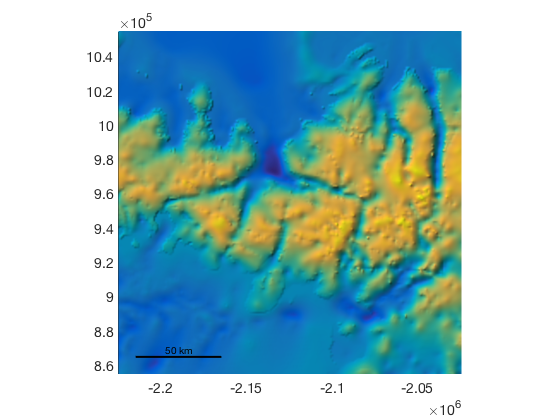
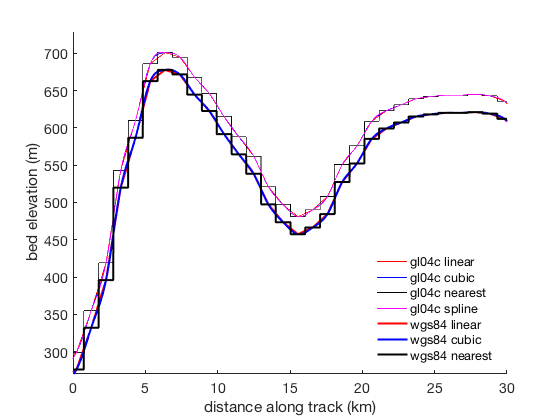

bedmap2_interp documentation
This function returns Bedmap2 data interpolated to a point, line, or grid.
An overview of Bedmap2 functions for AMT can be found here.
Contents
Syntax
vari = bedmap2_interp(lati,loni,'var') vari = bedmap2_interp(xi,yi,'var') vari = bedmap2_interp(...,method)
Description
vari = bedmap2_interp(lati,loni,'var') returns interpolated values of the variable 'var' at locations given by geographic coordinates lati and loni. lati and loni may be scalar, vector, or matrix, but their dimensions must agree. Input 'var' can be any of the following:
- 'surface' surface elevation of the ice (m) relative to gl04c geoid.
- 'surfacew' surface elevation of the ice (m) relative to WGS84.
- 'bed' bed elevation (m) relative to gl04c geoid.
- 'bedw' bed elevation (m) relative to WGS84 ellipsoid.
- 'thickness' ice thickness (m)
- 'beduncertainty' uncertainty (m)
- 'gl04c' gl04c geoid (z_wgs84 = z_bedmap2 + gl04c)
- 'coverage'
- 'icemask' includes grounded and ice shelves
- 'rockmask' 1s indicate rocks
- 'vostok' 1s indicate Lake Vostok
vari = bedmap2_interp(xi,yi,'var') as above, but for input coordinates xi,yi in polar stereographic (ps71) meters. Input coordinates are automatically determined to be either ps71 meters or geo coordinate degrees via the islatlon function.
vari = bedmap2_interp(...,method) specifies an interpolation method, which can be 'nearest', 'linear', 'spline', or 'cubic'. Default interpolation method is 'linear'.
Example 1: Ice thickness at a point
Find the thickness of the ice at Byrd ice core in West Antarctica:
[byrdlat,byrdlon] = coreloc('byrd'); ByrdCoreDepth = bedmap2_interp(byrdlat,byrdlon,'thickness')
ByrdCoreDepth =
2147.78
That's pretty close to the official length of Byrd Ice Core, which is listed as 2161 meters (Thompson et al., 2013). Certainly within the claimed uncertainty:
ByrdBedUncertainty = bedmap2_interp(byrdlat,byrdlon,'beduncertainty')
ByrdBedUncertainty =
88.00
More significant uncertainty exists in regions of steep topography and anywhere there is a paucity of observational data. Even where the Bedmap2 data set is accurate, the bedmap2_interp function may introduce errors associated with interpolation or the simple fact that elevations represent the average value with the 1 km by 1 km grid cell.
Example 2: Regrid bed elevations
To regrid bed data to a grid defined by mylat and mylon, simply enter your lats and lons as above. Suppose you have a 500 m resolution grid around Mount Blunt, about 200 km by 200 km wide. The grid looks like this:
% Create a grid: [mylat,mylon] = psgrid('mount blunt',[200 200],0.500); % Get bed elevations at your grid locations: bed_mygrid = bedmap2_interp(mylat,mylon,'bed'); % Plot bed elevations: pcolorps(mylat,mylon,bed_mygrid) % Make it pretty: shadem([225 45],1) axis tight scalebarps
Example 3: Comparing interpolation methods along a path
Here we take a look at a few different ways to interpolate Bedmap2 bed elevation data along a roughly 33 km north-south transect. From the original definition of a meter (one ten-millionth of the distance from the equator to the North Pole), let's interpolate bed data at roughly 10 m resolution.
Note that spline interpolation is not used for the WGS84 data set because the WGS84 data set contains too many NaN values to allow for spline interpolation.
lats = -80.1:-1/11111.1:-80.4; lons = -90*ones(size(lats)); bedLinear = bedmap2_interp(lats,lons,'bed'); bedCubic = bedmap2_interp(lats,lons,'bed','cubic'); bedNearest = bedmap2_interp(lats,lons,'bed','nearest'); bedSpline = bedmap2_interp(lats,lons,'bed','spline'); bedwLinear = bedmap2_interp(lats,lons,'bedw'); bedwCubic = bedmap2_interp(lats,lons,'bedw','cubic'); bedwNearest = bedmap2_interp(lats,lons,'bedw','nearest'); distalongtrack = pathdist(lats,lons,'units','kilometers');
Now we can plot the data to compare:
figure plot(distalongtrack,bedLinear,'r','linewidth',.5); hold on; plot(distalongtrack,bedCubic,'b','linewidth',.5); plot(distalongtrack,bedNearest,'k','linewidth',.5); plot(distalongtrack,bedSpline,'m','linewidth',.5); plot(distalongtrack,bedwLinear,'r','linewidth',2); plot(distalongtrack,bedwCubic,'b','linewidth',2); plot(distalongtrack,bedwNearest,'k','linewidth',2); ylabel('bed elevation (m)') xlabel('distance along track (km)') box off; legend('gl04c linear','gl04c cubic','gl04c nearest',... 'gl04c spline','wgs84 linear','wgs84 cubic',... 'wgs84 nearest','location','southeast') legend boxoff axis([0 30 270 730])
References
If this function is useful for you, please cite the following:
Fretwell, P., et al. "Bedmap2: improved ice bed, surface and thickness datasets for Antarctica." The Cryosphere 7.1 (2013). http://dx.doi.org/10.5194/tc-7-375-2013
Greene, C. A., Gwyther, D. E., & Blankenship, D. D. Antarctic Mapping Tools for Matlab. Computers & Geosciences. 104 (2017) pp.151-157. doi:10.1016/j.cageo.2016.08.003.
Author Info
Written by Chad A. Greene, June 2013. Institute for Geophysics The University of Texas at Austin